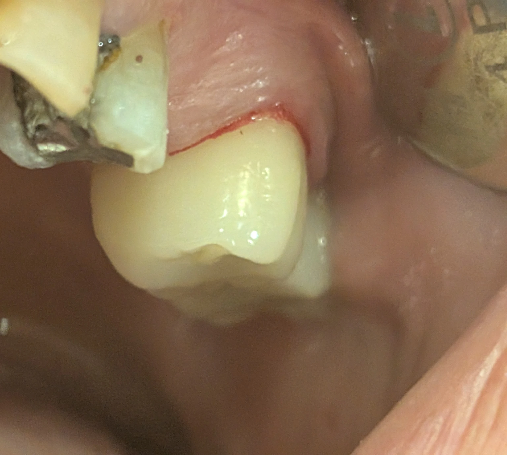

در دندانهای خلفی، در شرایط طبیعی بیمار عمدتاً سطح باکال دندان را میبیند. اما زمانی که دندان مزیالی از دست رفته باشد، سطح مزیال تاج نیز وارد میدان دید میشود.
در این وضعیت بیمار ممکن است احساس کند: روکش بزرگتر از حد طبیعی ساخته شده، دندان برجسته یا حجیم است، یا فرم تاج با دندانهای دیگر هماهنگ نیست؛ در حالیکه بسیاری از موارد، مشکل ناشی از افزایش سطح قابل رؤیت است، نه افزایش واقعی حجم تاج.
وقتی دندان مجاور وجود ندارد:
سطح مزیال که معمولاً پنهان است دیده میشود
مرز بصری طبیعی قوس دندانی از بین میرود
حجم واقعی تاج بیشتر به چشم میآید
و ادراک عرض دندان افزایش مییابد
در overcontour واقعی انتظار داریم:
برجستگی غیرطبیعی در پروفایل باکال
اختلال در مسیر تمیز شدن و تجمع پلاک
التهاب لثه در ناحیه مارژین
و احساس گیر غذایی
اما اگر پروفایل باکال صحیح باشد و مشکلات فانکشنال وجود نداشته باشد، شکایت بیمار میتواند صرفاً ادراکی باشد.
شناخت این پدیده از: تراش یا اصلاح غیرضروری روکش، کاهش بیمورد حجم تاج، و آسیب به کانتور فانکشنال جلوگیری میکند.
در چنین شرایطی:
پروفایل باکال و اکلوژن با معیارهای فانکشنال ارزیابی شود
از اصلاح بیش از حد برای «کوچکتر نشان دادن» دندان پرهیز گردد
به بیمار توضیح داده شود که این ادراک ناشی از فقدان دندان مجاور است
و با جایگزینی دندان از دست رفته، ادراک اندازه طبیعیتر خواهد شد
گاهی مشکل در ترمیم نیست؛ در مرزهای بصری قوس دندانی است.
وقتی این مرزها بازسازی شوند، ادراک اندازه نیز به حالت طبیعی بازمیگردد.